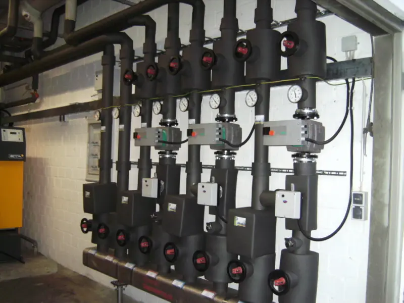

Im Haus fängt es bei der einfachen Installation zur Stromversorgung an: Schalter, Steckdosen, Telefon, Fernsehen, Klingel. Man denkt über die Technik dahinter nicht nach, solange sie funktioniert.
Bei moderner Gebäudetechnik sieht das anders aus
Licht nach Zeitvorgabe oder nach Raumnutzung steuern. Energie nur dort einsetzen, wo sie gebraucht wird. Jalousien und Rollos automatisch fahren lassen. Türsprechanlage, Telefonanlage und mehrere Computer miteinander verbinden. Satellitenanlage oder Kabelanschluss in alle wichtigen Räume legen. Das eigene Eigentum absichern. Maschinen im Betrieb sicher mit Strom versorgen. Eine Außenbeleuchtung, die funktional ist und trotzdem wenig verbraucht.
Das funktioniert nicht mehr ganz so einfach — aber es funktioniert.
Was im Verteiler steckt
Klicken oder mit der Tastatur auswählen — jedes Modul erklärt sich selbst.
Ausgewählt
Sicherheitstechnik
Videoüberwachung, Einbruchmeldeanlage, Brandmeldeanlage: im kleinen Bereich hilft der Betrieb selbst weiter. Größere Anlagen oder solche, die eine Zertifizierung verlangen, werden über einen Partner erstellt. Das steht so auf der bestehenden Website und ist in der Vorschau unverändert übernommen.
Rauchwarnmelder
Der Betrieb weist ein Zertifikat als Fachkraft für Rauchwarnmelder aus und unterstützt bei Auswahl, Montageort, Montage und Wartung — auch für einzelne Melder. Welche Pflichten in Nordrhein-Westfalen gelten, steht im Ratgeber-Beitrag zur Rauchwarnmelderpflicht.
Blitzschutz
Nicht die Steckdosenleiste aus dem Baumarkt, sondern der Blitzschutz, der funktioniert. Bei der Installationstechnik hilft der Betrieb direkt; wo mehr nötig ist, kommt ein auf diesen Bereich spezialisierter Partner dazu.

Nächster Schritt
Strom im Haus neu ordnen?
Ob Zählerschrank, neue Stromkreise oder eine Steuerung für Licht und Jalousien — ein Anruf klärt schneller, was sinnvoll ist, als jede Beschreibung.